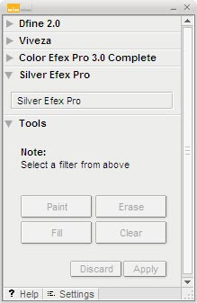

The
Selective Tool automates the creation of layers and layer masks
within Adobe Photoshop and Adobe Photoshop Elements while applying
Silver Efex Pro.
The Selective Tool can be used to selectively apply the filter’s effect.
Use this tool to create a layer mask with which to selectively
control where the Silver Efex Pro effect
is applied using Photoshop’s brush, lasso, marquee, and gradient tools.
Silver Efex Pro makes this access more convenient by giving you
the choice of selectively applying the filter in the Filter Interface.
This lets you launch the Silver Efex Pro interface
from either the Selective Tool or the Filters menu.
Click on the Silver Efex Pro button
within the Silver Efex Pro section of the Selective Tool window to
launch the filter.
Selection Tools
The Selective Tool contains four tools for applying the selected Silver Efex Pro filter.
Paint
Click the Paint button to selectively paint the current filter’s effect into the active image. Ensure that your Paint Brush mode is set to Normal and that Opacity is set to 100%. You can control the degree to which the effect is added to the image by varying the opacity of the brush.
Erase
 Click
the Erase button to selectively remove
the current filter’s effect from the active image. Ensure
that your Paint Brush mode is set to Normal and that Opacity is
set to 100%. You can control the degree to which the effect is
removed from the image by varying the opacity of the brush.
Click
the Erase button to selectively remove
the current filter’s effect from the active image. Ensure
that your Paint Brush mode is set to Normal and that Opacity is
set to 100%. You can control the degree to which the effect is
removed from the image by varying the opacity of the brush.
Fill
Click the Fill button to apply the filter’s effect to the entire image. This tool is especially useful if you want to apply the filter’s effect to all but a small area. Click Fill, then click Erase to remove the effect from the area to remain unaffected.
Clear
Click the Clear button to remove the filter’s effect from the entire image. This is helpful if you made a mistake with the Paint tool and want to start over.
Apply / Discard
 Click Apply to
apply the current filter’s effect to the image. Click Discard to
prevent the effect from being applied.
Click Apply to
apply the current filter’s effect to the image. Click Discard to
prevent the effect from being applied.